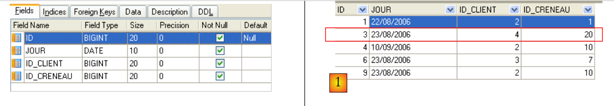
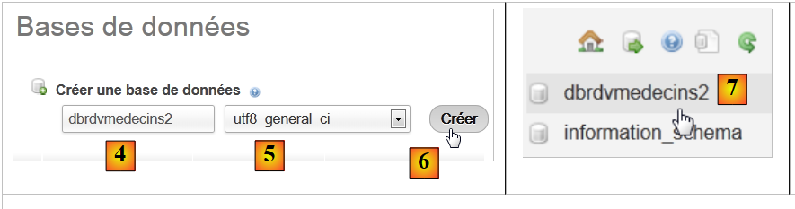
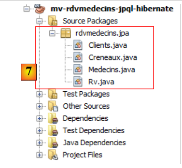

4. JPA- : Ein Überblick
Wir möchten JPA (Java Persistence API) anhand einiger Beispiele vorstellen. JPA wird im Kurs behandelt:
- Java 5 Persistence in der Praxis: [http://tahe.developpez.com/java/jpa] – bietet die Werkzeuge zum Aufbau der Datenzugriffsschicht mit JPA
4.1. Die Rolle von JPA in einer mehrschichtigen Architektur
Leser werden gebeten, den Anfang dieses Dokuments (Absatz 2) zu lesen, in dem die Rolle der JPA-Schicht in einer mehrschichtigen Architektur erläutert wird. Die JPA-Schicht ist Teil der Datenzugriffsschichten:
 |
Die [DAO]-Schicht interagiert mit der JPA-Spezifikation. Unabhängig davon, welches Produkt sie implementiert, bleibt die Schnittstelle der JPA-Schicht, die der [DAO]-Schicht präsentiert wird, unverändert. Im Folgenden stellen wir einige Beispiele aus [ref1] vor, die uns beim Aufbau unserer eigenen JPA-Schicht helfen werden.
4.2. JPA – Beispiele
4.2.1. Beispiel 1 – Objektdarstellung einer einzelnen Tabelle
4.2.1.1. Die [person]-Tabelle
Betrachten wir eine Datenbank mit einer einzigen Tabelle [person], deren Aufgabe es ist, Informationen über Personen zu speichern:
 |
Primärschlüssel der Tabelle | |
Version der Zeile in der Tabelle. Bei jeder Änderung der Person wird die Versionsnummer erhöht. | |
Nachname der Person | |
Vorname | |
ihr Geburtsdatum | |
Ganzzahl 0 (unverheiratet) oder 1 (verheiratet) | |
Anzahl der Kinder |
4.2.1.2. Die Entität [Person]
Wir befinden uns in der folgenden Laufzeitumgebung:
 |
Die JPA-Schicht [5] muss eine Brücke zwischen der relationalen Welt der Datenbank [7] und der Objektwelt [4] schlagen, die von Java-Programmen [3] bearbeitet wird. Diese Brücke wird durch Konfiguration hergestellt, und dafür gibt es zwei Möglichkeiten:
- die Verwendung von XML-Dateien. Bis zum Erscheinen von JDK 1.5 war dies praktisch die einzige Möglichkeit
- mit Java-Annotationen seit JDK 1.5
In diesem Dokument werden wir ausschließlich die zweite Methode verwenden.
Das [Person]-Objekt, das die zuvor vorgestellte [person]-Tabelle repräsentiert, könnte wie folgt aussehen:
...
@SuppressWarnings("unused")
@Entity
@Table(name="Personne")
public class Personne implements Serializable{
@Id
@Column(name = "ID", nullable = false)
@GeneratedValue(strategy = GenerationType.AUTO)
private Integer id;
@Column(name = "VERSION", nullable = false)
@Version
private int version;
@Column(name = "NOM", length = 30, nullable = false, unique = true)
private String nom;
@Column(name = "PRENOM", length = 30, nullable = false)
private String prenom;
@Column(name = "DATENAISSANCE", nullable = false)
@Temporal(TemporalType.DATE)
private Date datenaissance;
@Column(name = "MARIE", nullable = false)
private boolean marie;
@Column(name = "NBENFANTS", nullable = false)
private int nbenfants;
// manufacturers
public Personne() {
}
public Personne(String nom, String prenom, Date datenaissance, boolean marie,
int nbenfants) {
setNom(nom);
setPrenom(prenom);
setDatenaissance(datenaissance);
setMarie(marie);
setNbenfants(nbenfants);
}
// toString
public String toString() {
...
}
// getters and setters
...
}
Die Konfiguration erfolgt mithilfe von Java-Annotationen (@Annotation). Java-Annotationen werden entweder vom Compiler oder von speziellen Tools zur Laufzeit verarbeitet. Abgesehen von der Annotation in Zeile 3, die für den Compiler bestimmt ist, sind alle Annotationen hier für die verwendete JPA-Implementierung, also Hibernate oder Toplink, vorgesehen. Sie werden daher zur Laufzeit verarbeitet. Fehlen Tools, die sie interpretieren können, werden diese Annotationen ignoriert. Somit könnte die obige Klasse [Person] in einem Nicht-JPA-Kontext verwendet werden.
Es gibt zwei unterschiedliche Fälle für die Verwendung von JPA-Annotationen in einer Klasse C, die einer Tabelle T zugeordnet ist:
- Die Tabelle T existiert bereits: Die JPA-Annotationen müssen dann die vorhandene Struktur nachbilden (Spaltennamen und -definitionen, Integritätsbeschränkungen, Fremdschlüssel, Primärschlüssel usw.).
- Die Tabelle T existiert nicht und wird auf der Grundlage der in der Klasse C gefundenen Annotationen erstellt.
Fall 2 ist am einfachsten zu handhaben. Mithilfe von JPA-Annotationen legen wir die Struktur der gewünschten Tabelle T fest. Fall 1 ist oft komplexer. Die Tabelle T wurde möglicherweise vor langer Zeit außerhalb eines JPA-Kontexts erstellt. Ihre Struktur ist daher möglicherweise für die Relational-zu-Objekt-Brücke von JPA ungeeignet. Der Einfachheit halber konzentrieren wir uns auf Fall 2, in dem die mit der Klasse C verknüpfte Tabelle T auf der Grundlage der JPA-Annotationen in der Klasse C erstellt wird.
Betrachten wir die JPA-Annotationen der Klasse [Person]:
- Zeile 4: Die Annotation @Entity ist die erste wesentliche Annotation. Sie steht vor der Zeile, in der die Klasse deklariert wird, und gibt an, dass die betreffende Klasse von der JPA-Persistenzschicht verwaltet werden muss. Ohne diese Annotation würden alle anderen JPA-Annotationen ignoriert.
- Zeile 5: Die Annotation @Table bezeichnet die Datenbanktabelle, die die Klasse repräsentiert. Ihr Hauptargument ist name, das den Namen der Tabelle angibt. Ohne dieses Argument wird die Tabelle nach der Klasse benannt, in diesem Fall [Person]. In unserem Beispiel ist die Annotation @Table daher überflüssig.
- Zeile 8: Die Annotation @Id wird verwendet, um das Feld in der Klasse zu benennen, das dem Primärschlüssel der Tabelle entspricht. Diese Annotation ist obligatorisch. Hier gibt sie an, dass das Feld id in Zeile 11 dem Primärschlüssel der Tabelle entspricht.
- Zeile 9: Die Annotation @Column wird verwendet, um ein Klassenfeld mit der Tabellenspalte zu verknüpfen, die das Feld repräsentiert. Das Attribut „name“ gibt den Namen der Spalte in der Tabelle an. Wird dieses Attribut weggelassen, erhält die Spalte denselben Namen wie das Feld. In unserem Beispiel war das Argument „name“ daher optional. Das Argument „nullable=false“ legt fest, dass die mit dem Feld verknüpfte Spalte keinen NULL-Wert annehmen darf und das Feld daher einen Wert haben muss.
- Zeile 10: Die Annotation @GeneratedValue legt fest, wie der Primärschlüssel generiert wird, wenn er automatisch vom DBMS generiert wird. Dies ist in allen unseren Beispielen der Fall. Sie ist nicht zwingend erforderlich. Somit könnte unsere Klasse „Person“ eine Matrikelnummer als Primärschlüssel haben, die nicht vom DBMS generiert, sondern von der Anwendung festgelegt wird. In diesem Fall würde die Annotation @GeneratedValue weggelassen werden. Das Argument „strategy“ legt fest, wie der Primärschlüssel generiert wird, wenn er vom DBMS generiert wird. Nicht alle DBMS verwenden dieselbe Technik zur Generierung von Primärschlüsselwerten. Zum Beispiel:
verwendet einen Wertgenerator, der vor jedem Einfügen aufgerufen wird | |
ist das Primärschlüsselfeld als Typ „Identity“ definiert. Das Ergebnis ähnelt dem Wertgenerator von Firebird, mit dem Unterschied, dass der Schlüsselwert erst nach dem Einfügen der Zeile bekannt ist. | |
verwendet ein Objekt namens „SEQUENCE“, das ebenfalls als Wertgenerator fungiert |
Die JPA-Schicht muss je nach DBMS unterschiedliche SQL-Anweisungen generieren, um den Wertgenerator zu erstellen. Sie ist so konfiguriert, dass sie den Typ des DBMS angibt, den sie verarbeiten muss. Dadurch kann sie die Standardstrategie zur Generierung von Primärschlüsselwerten für dieses DBMS ermitteln. Das Argument strategy = GenerationType.*****AUTO* weist die JPA-Schicht an, diese Standardstrategie zu verwenden. Diese Technik hat in allen Beispielen in diesem Dokument für die sieben verwendeten DBMS funktioniert.
- Zeile 14: Die Annotation @Version kennzeichnet das Feld, das zur Verwaltung des gleichzeitigen Zugriffs auf dieselbe Zeile in der Tabelle verwendet wird.
Um dieses Problem des gleichzeitigen Zugriffs auf dieselbe Zeile in der Tabelle [person] zu verstehen, nehmen wir an, dass eine Webanwendung die Aktualisierung von Personeninformationen ermöglicht, und betrachten wir das folgende Szenario:
Zum Zeitpunkt T1 beginnt Benutzer U1 mit der Bearbeitung einer Person P. In diesem Moment beträgt die Anzahl der Kinder 0. Er ändert diese Zahl auf 1, doch bevor er seine Änderungen übermittelt, beginnt Benutzer U2 mit der Bearbeitung derselben Person P. Da U1 seine Änderungen noch nicht übermittelt hat, sieht U2 die Anzahl der Kinder auf seinem Bildschirm als 0 an. U2 ändert den Namen der Person P in Großbuchstaben. Dann speichern U1 und U2 ihre Änderungen in dieser Reihenfolge. Die Änderung von U2 hat Vorrang: In der Datenbank wird der Name in Großbuchstaben stehen und die Anzahl der Kinder bleibt bei Null, obwohl U1 glaubt, sie auf 1 geändert zu haben.
Das Konzept der Versionsverwaltung hilft uns, dieses Problem zu lösen. Betrachten wir denselben Anwendungsfall noch einmal:
Zum Zeitpunkt T1 beginnt ein Benutzer U1 mit der Bearbeitung der Person P. Zu diesem Zeitpunkt beträgt die Anzahl der Kinder 0 und die Version ist V1. Er ändert die Anzahl der Kinder auf 1, doch bevor er seine Änderung festschreibt, beginnt ein Benutzer U2 mit der Bearbeitung derselben Person P. Da U1 seine Änderung noch nicht festgeschrieben hat, sieht U2 die Anzahl der Kinder als 0 und die Version als V1. U2 ändert den Namen der Person P in Großbuchstaben. Dann committen U1 und U2 ihre Änderungen in dieser Reihenfolge. Vor dem Committen einer Änderung überprüfen wir, ob der Benutzer, der die Person P ändert, dieselbe Version hat wie die aktuell gespeicherte Version der Person P. Dies ist bei Benutzer U1 der Fall. Seine Änderung wird daher akzeptiert, und wir ändern dann die Version der geänderten Person von V1 auf V2, um anzuzeigen, dass die Person eine Änderung erfahren hat. Bei der Validierung der Änderung von U2 stellen wir fest, dass U2 die Version V1 der Person P hat, während die aktuelle Version V2 ist. Wir können den Benutzer U2 dann darüber informieren, dass jemand anderes vor ihm gehandelt hat und dass er mit der neuen Version der Person P beginnen muss. Er wird dies tun, die Version V2 der Person P abrufen, die nun ein Kind hat, den Namen großschreiben und validieren. Seine Änderung wird akzeptiert, wenn die registrierte Person P noch die Version V2 ist. Letztendlich werden die von U1 und U2 vorgenommenen Änderungen berücksichtigt, während im Anwendungsfall ohne Versionen eine der Änderungen verloren gegangen wäre.
Die [DAO]-Schicht der Client-Anwendung kann die Version der Klasse [Person] selbst verwalten. Jedes Mal, wenn ein Objekt P geändert wird, wird die Version dieses Objekts in der Tabelle um 1 erhöht. Die Annotation @Version ermöglicht es, diese Verwaltung auf die JPA-Schicht zu übertragen. Das betreffende Feld muss nicht wie im Beispiel „version“ heißen. Es kann einen beliebigen Namen haben.
Die Felder, die den Annotationen @Id und @Version entsprechen, dienen der Persistenz. Sie wären nicht erforderlich, wenn die Klasse [Person] nicht persistiert werden müsste. Wir sehen also, dass ein Objekt unterschiedlich dargestellt wird, je nachdem, ob es persistiert werden muss oder nicht.
- Zeile 17: Auch hier liefert die Annotation @Column Informationen über die Spalte in der Tabelle [person], die dem Feld „name“ der Klasse Person zugeordnet ist. Hier finden wir zwei neue Argumente:
- unique=true gibt an, dass der Name einer Person eindeutig sein muss. Dies führt zur Hinzufügung einer Eindeutigkeitsbeschränkung für die Spalte NAME der Tabelle [person] in der Datenbank.
- length=30 legt die Anzahl der Zeichen in der Spalte NAME auf 30 fest. Das bedeutet, dass der Typ dieser Spalte VARCHAR(30) ist.
- Zeile 24: Die Annotation @Temporal wird verwendet, um den SQL-Typ für eine Datums-/Uhrzeit-Spalte oder ein Datums-/Uhrzeit-Feld anzugeben. Der Typ TemporalType.DATE bezeichnet ein Datum ohne zugehörige Uhrzeit. Die anderen möglichen Typen sind TemporalType.TIME zur Kodierung einer Uhrzeit und TemporalType.TIMESTAMP zur Kodierung von Datum und Uhrzeit.
Betrachten wir nun den Rest des Codes in der Klasse [Person]:
- Zeile 6: Die Klasse implementiert die Schnittstelle Serializable. Die Serialisierung eines Objekts beinhaltet dessen Umwandlung in eine Bitfolge. Die Deserialisierung ist der umgekehrte Vorgang. Serialisierung/Deserialisierung wird insbesondere in Client/Server-Anwendungen verwendet, bei denen Objekte über das Netzwerk ausgetauscht werden. Client- oder Serveranwendungen nehmen von diesem Vorgang keine Kenntnis, da er von den JVMs transparent ausgeführt wird. Damit dies jedoch möglich ist, müssen die Klassen der ausgetauschten Objekte mit dem Schlüsselwort Serializable „markiert“ sein.
- Zeile 37: Ein Konstruktor für die Klasse. Beachten Sie, dass die Felder „id“ und „version“ nicht zu den Parametern gehören. Das liegt daran, dass diese beiden Felder von der JPA-Schicht und nicht von der Anwendung verwaltet werden.
- Zeilen 51 ff.: die get- und set-Methoden für jedes Feld der Klasse. Beachten Sie, dass JPA-Annotationen anstelle der Felder selbst auf den get-Methoden der Felder platziert werden können. Die Platzierung der Annotationen gibt an, welchen Modus JPA für den Zugriff auf die Felder verwenden soll:
- Wenn die Annotationen auf Feldebene platziert sind, greift JPA direkt auf die Felder zu, um sie zu lesen oder zu schreiben
- Wenn die Annotationen auf der Get-Ebene platziert sind, greift JPA über die Get-/Set-Methoden auf die Felder zu, um sie zu lesen oder zu schreiben
Die Position der @Id-Annotation bestimmt die Platzierung von JPA-Annotationen in einer Klasse. Bei Platzierung auf Feldebene bedeutet dies direkten Zugriff auf die Felder; bei Platzierung auf Get-Ebene bedeutet dies Zugriff auf die Felder über die Get- und Set-Methoden. Die anderen Annotationen müssen dann auf die gleiche Weise wie die @Id-Annotation platziert werden.
4.2.2. Konfiguration der JPA-Schicht
Tests der JPA-Schicht können unter Verwendung der folgenden Architektur durchgeführt werden:
 |
- in [7]: die Datenbank, die aus den Annotationen der Entität [Person] sowie zusätzlichen Konfigurationen in einer Datei namens [persistence.xml] generiert wird
- in [5, 6]: eine von Hibernate implementierte JPA-Schicht
- in [4]: die Entität [Person]
- in [3]: ein konsolenbasiertes Testprogramm
Die JPA-Schicht wird über die Datei [META-INF/persistence.xml] konfiguriert:
 |
Zur Laufzeit wird im Klassenpfad der Anwendung nach der Datei [META-INF/persistence.xml] gesucht.
Sehen wir uns die Konfiguration der JPA-Schicht in der Datei [persistence.xml] unseres Projekts an:
<?xml version="1.0" encoding="UTF-8"?>
<persistence version="1.0" xmlns="http://java.sun.com/xml/ns/persistence">
<persistence-unit name="jpa" transaction-type="RESOURCE_LOCAL">
<!-- provider -->
<provider>org.hibernate.ejb.HibernatePersistence</provider>
<properties>
<!-- Persistent classes -->
<property name="hibernate.archive.autodetection" value="class, hbm" />
<!-- logs SQL
<property name="hibernate.show_sql" value="true"/>
<property name="hibernate.format_sql" value="true"/>
<property name="use_sql_comments" value="true"/>
-->
<!-- connection JDBC -->
<property name="hibernate.connection.driver_class" value="com.mysql.jdbc.Driver" />
<property name="hibernate.connection.url" value="jdbc:mysql://localhost:3306/jpa" />
<property name="hibernate.connection.username" value="jpa" />
<property name="hibernate.connection.password" value="jpa" />
<!-- automatic schematic creation -->
<property name="hibernate.hbm2ddl.auto" value="create" />
<!-- Dialect -->
<property name="hibernate.dialect" value="org.hibernate.dialect.MySQL5InnoDBDialect" />
<!-- properties DataSource c3p0 -->
<property name="hibernate.c3p0.min_size" value="5" />
<property name="hibernate.c3p0.max_size" value="20" />
<property name="hibernate.c3p0.timeout" value="300" />
<property name="hibernate.c3p0.max_statements" value="50" />
<property name="hibernate.c3p0.idle_test_period" value="3000" />
</properties>
</persistence-unit>
</persistence>
Um diese Konfiguration zu verstehen, müssen wir uns noch einmal die Datenzugriffsarchitektur unserer Anwendung ansehen:
 |
- Die Datei [persistence.xml] konfiguriert die Schichten [4, 5, 6]
- [4]: Hibernate-Implementierung von JPA
- [5]: Hibernate greift über einen Verbindungspool auf die Datenbank zu. Ein Verbindungspool ist ein Pool offener Verbindungen zum DBMS. Auf ein DBMS greifen mehrere Benutzer zu, doch aus Leistungsgründen darf die Anzahl der gleichzeitig offenen Verbindungen ein Limit N nicht überschreiten. Gut geschriebener Code öffnet eine Verbindung zum DBMS für die kürzestmögliche Zeit: Er führt SQL-Befehle aus und schließt die Verbindung. Dies wiederholt er jedes Mal, wenn er mit der Datenbank arbeiten muss. Der Aufwand für das Öffnen und Schließen einer Verbindung ist nicht zu vernachlässigen, und hier kommt der Verbindungspool ins Spiel. Beim Start der Anwendung öffnet der Verbindungspool N1 Verbindungen zum DBMS. Die Anwendung fordert bei Bedarf eine offene Verbindung aus dem Pool an. Die Verbindung wird an den Pool zurückgegeben, sobald die Anwendung sie nicht mehr benötigt, vorzugsweise so schnell wie möglich. Die Verbindung wird nicht geschlossen und bleibt für den nächsten Benutzer verfügbar. Ein Verbindungspool ist daher ein System zur gemeinsamen Nutzung offener Verbindungen.
- [6]: der JDBC-Treiber für das verwendete DBMS
Sehen wir uns nun an, wie die Datei [persistence.xml] die oben genannten Schichten [4, 5, 6] konfiguriert:
- Zeile 2: Das Stamm-Tag der XML-Datei lautet <persistence>.
- Zeile 3: <persistence-unit> wird verwendet, um eine Persistenz-Einheit zu definieren. Es kann mehrere Persistenz-Einheiten geben. Jede hat einen Namen (name-Attribut) und einen Transaktionstyp (transaction-type-Attribut). Die Anwendung greift über den Namen auf die Persistenz-Einheit zu, in diesem Fall jpa. Der Transaktionstyp RESOURCE_LOCAL gibt an, dass die Anwendung Transaktionen mit dem DBMS selbst verwaltet. Dies ist hier der Fall. Wenn die Anwendung in einem EJB3-Container ausgeführt wird, kann sie den Transaktionsdienst des Containers nutzen. In diesem Fall setzen wir transaction-type=JTA (Java Transaction API). JTA ist der Standardwert, wenn das Attribut transaction-type weggelassen wird.
- Zeile 5: Das <provider>-Tag wird verwendet, um eine Klasse zu definieren, die die Schnittstelle [javax.persistence.spi.PersistenceProvider] implementiert, wodurch die Anwendung die Persistenzschicht initialisieren kann. Da wir eine JPA/Hibernate-Implementierung verwenden, handelt es sich bei der hier verwendeten Klasse um eine Hibernate-Klasse.
- Zeile 6: Das <properties>-Tag führt Eigenschaften ein, die für den gewählten Provider spezifisch sind. Je nachdem, ob Sie Hibernate, TopLink, Kodo usw. gewählt haben, stehen Ihnen also unterschiedliche Eigenschaften zur Verfügung. Die folgenden sind spezifisch für Hibernate.
- Zeile 8: Weist Hibernate an, den Klassenpfad des Projekts nach Klassen zu durchsuchen, die mit @Entity annotiert sind, damit diese verwaltet werden können. @Entity-Klassen können auch mithilfe von <class>class_name</class>-Tags direkt unter dem <persistence-unit>-Tag deklariert werden. Dies werden wir beim JPA/TopLink-Anbieter tun.
- Die Zeilen 10–12, die hier auskommentiert sind, konfigurieren die Konsolenprotokolle von Hibernate:
- Zeile 10: Zum Aktivieren oder Deaktivieren der Anzeige von SQL-Anweisungen, die Hibernate an das DBMS sendet. Dies ist während der Lernphase sehr nützlich. Aufgrund der Relational-Objekt-Brücke arbeitet die Anwendung mit persistenten Objekten, auf die sie Operationen wie [persist, merge, remove] anwendet. Es ist sehr hilfreich zu wissen, welche SQL-Anweisungen für diese Operationen tatsächlich ausgegeben werden. Indem Sie diese studieren, lernen Sie nach und nach, die SQL-Anweisungen zu antizipieren, die Hibernate bei der Ausführung solcher Operationen auf persistente Objekte generiert, und die Relational-Objekt-Brücke nimmt in Ihrem Kopf Gestalt an.
- Zeile 11: Die auf der Konsole angezeigten SQL-Anweisungen können übersichtlich formatiert werden, um sie leichter lesbar zu machen
- Zeile 12: Die angezeigten SQL-Anweisungen werden zudem mit Anmerkungen versehen
- Die Zeilen 15–19 definieren die JDBC-Schicht (Schicht [6] in der Architektur):
- Zeile 15: die JDBC-Treiberklasse für das DBMS, hier MySQL5
- Zeile 16: die URL der verwendeten Datenbank
- Zeilen 17, 18: Benutzername und Passwort für die Verbindung
- Zeile 22: Hibernate muss wissen, mit welchem DBMS es arbeitet. Der Grund dafür ist, dass alle DBMS proprietäre SQL-Erweiterungen haben – wie beispielsweise eigene Methoden zur automatischen Generierung von Primärschlüsselwerten –, was bedeutet, dass Hibernate das spezifische DBMS identifizieren muss, um SQL-Anweisungen zu senden, die es verstehen kann. [MySQL5InnoDBDialect] bezieht sich auf das MySQL5-DBMS mit InnoDB-Tabellen, die Transaktionen unterstützen.
- Die Zeilen 24–28 konfigurieren den c3p0-Verbindungspool (Schicht [5] in der Architektur):
- Zeilen 24, 25: die minimale (Standardwert 3) und maximale Anzahl von Verbindungen (Standardwert 15) im Pool. Die standardmäßige anfängliche Anzahl von Verbindungen beträgt 3.
- Zeile 26: maximale Wartezeit in Millisekunden für eine Verbindungsanfrage vom Client. Nach Ablauf dieser Zeit gibt c3p0 eine Ausnahme zurück.
- Zeile 27: Für den Zugriff auf die Datenbank verwendet Hibernate vorbereitete SQL-Anweisungen (PreparedStatement), die c3p0 zwischenspeichern kann. Das bedeutet: Wenn die Anwendung eine vorbereitete SQL-Anweisung, die sich bereits im Cache befindet, ein zweites Mal anfordert, muss diese nicht erneut vorbereitet werden (die Vorbereitung einer SQL-Anweisung ist mit einem gewissen Aufwand verbunden), sondern es wird die im Cache vorhandene Anweisung verwendet. Hier legen wir die maximale Anzahl an vorbereiteten SQL-Anweisungen fest, die der Cache über alle Verbindungen hinweg aufnehmen kann (eine vorbereitete SQL-Anweisung gehört zu einer einzelnen Verbindung).
- Zeile 28: Häufigkeit in Millisekunden für die Überprüfung der Gültigkeit von Verbindungen. Eine Verbindung im Pool kann aus verschiedenen Gründen ungültig werden (der JDBC-Treiber erklärt die Verbindung für ungültig, weil sie zu lange offen war, der JDBC-Treiber hat „Fehler“ usw.).
- Zeile 20: Hier legen wir fest, dass bei der Initialisierung der Persistenzschicht das Datenbankschema für @Entity-Objekte generiert werden soll. Hibernate verfügt nun über alle Werkzeuge, um die SQL-Anweisungen zum Erstellen der Datenbanktabellen zu generieren:
- die Konfiguration der @Entity-Objekte ermöglicht es, zu bestimmen, welche Tabellen generiert werden sollen
- Die Zeilen 15–18 und 24–28 ermöglichen es, eine Verbindung zum DBMS herzustellen
- Zeile 22 gibt an, welcher SQL-Dialekt zur Generierung der Tabellen verwendet werden soll
Somit erstellt die hier verwendete Datei [persistence.xml] bei jedem Ausführen der Anwendung eine neue Datenbank. Die Tabellen werden neu erstellt (create table), nachdem sie gelöscht wurden (drop table), sofern sie existierten. Beachten Sie, dass dies natürlich nicht in einer Produktionsdatenbank durchgeführt werden sollte...
4.2.3. Beispiel 2: Eins-zu-viele-Beziehung
4.2.3.1. Die Datenbankschema-Datei [
1  | 2 |
- in [1] die Datenbank und in [2] deren DDL (MySQL5)
Ein Artikel A(id, version, name) gehört genau zu einer Kategorie C(id, version, name). Eine Kategorie C kann 0, 1 oder mehrere Artikel enthalten. Wir haben eine Eins-zu-Viele-Beziehung (Kategorie -> Artikel) und die umgekehrte Viele-zu-Eins-Beziehung (Artikel -> Kategorie). Diese Beziehung wird durch den Fremdschlüssel dargestellt, den die Tabelle [article] auf die Tabelle [category] hat (Zeilen 24–28 der DDL).
4.2.3.2. Die @Entity-Objekte, die die Datenbank repräsentieren
Ein Artikel wird durch das folgende @Entity [Article] dargestellt:
package entites;
...
@Entity
@Table(name="jpa05_hb_article")
public class Article implements Serializable {
// fields
@Id
@GeneratedValue(strategy = GenerationType.AUTO)
private Long id;
@SuppressWarnings("unused")
@Version
private int version;
@Column(length = 30)
private String nom;
// main relationship Article (many) -> Category (one)
// implemented by a foreign key (categorie_id) in Article
// 1 Article must have 1 Category (nullable=false)
@ManyToOne(fetch=FetchType.LAZY)
@JoinColumn(name = "categorie_id", nullable = false)
private Categorie categorie;
// manufacturers
public Article() {
}
// getters and setters
...
// toString
public String toString() {
return String.format("Article[%d,%d,%s,%d]", id, version, nom, categorie.getId());
}
}
- Zeilen 9–11: Primärschlüssel der @Entity
- Zeilen 13–15: deren Versionsnummer
- Zeilen 17–18: Name des Artikels
- Zeilen 20–25: Many-to-One-Beziehung, die die @Entity „Article“ mit der @Entity „Category“ verknüpft:
- Zeile 23: die ManyToOne-Annotation. „Many“ bezieht sich auf die @Entity „Article“, in der wir uns befinden, und „One“ bezieht sich auf die @Entity „Category“ (Zeile 25). Eine Kategorie (One) kann mehrere Artikel (Many) haben.
- Zeile 24: Die Annotation ManyToOne definiert die Fremdschlüsselspalte in der Tabelle [article]. Sie erhält den Namen (name) categorie_id, und jede Zeile muss einen Wert in dieser Spalte enthalten (nullable=false).
- Zeile 25: Die Kategorie, zu der der Artikel gehört. Wenn ein Artikel zum Persistenzkontext hinzugefügt wird, fordern wir an, dass seine Kategorie nicht sofort hinzugefügt wird (fetch=FetchType.LAZY, Zeile 23). Wir wissen nicht, ob diese Anforderung sinnvoll ist. Wir werden sehen.
Eine Kategorie wird durch die folgende @Entity [Category] dargestellt:
package entites;
...
@Entity
@Table(name="jpa05_hb_categorie")
public class Categorie implements Serializable {
// fields
@Id
@GeneratedValue(strategy = GenerationType.AUTO)
private Long id;
@SuppressWarnings("unused")
@Version
private int version;
@Column(length = 30)
private String nom;
// inverse relationship Category (one) -> Article (many) from relationship Article (many) -> Category (one)
// cascade insertion Category -> insertion Articles
// cascade maj Category -> maj Articles
// cascade delete Category -> delete Articles
@OneToMany(mappedBy = "categorie", cascade = { CascadeType.ALL })
private Set<Article> articles = new HashSet<Article>();
// manufacturers
public Categorie() {
}
// getters and setters
...
// toString
public String toString() {
return String.format("Categorie[%d,%d,%s]", id, version, nom);
}
// bidirectional association Category <--> Article
public void addArticle(Article article) {
// the item is added to the collection of items in the category
articles.add(article);
// article changes category
article.setCategorie(this);
}
}
- Zeilen 8–11: Der Primärschlüssel der @Entity
- Zeilen 12–14: seine Version
- Zeilen 16–17: der Name der Kategorie
- Zeilen 19–24: die Menge der Artikel in der Kategorie
- Zeile 23: Die Annotation @OneToMany bezeichnet eine Eins-zu-Viele-Beziehung. Das „One“ bezieht sich auf die @Entity [Category], in der wir uns befinden, und das „Many“ bezieht sich auf den Typ [Article] in Zeile 24: Eine (One) Kategorie hat viele (Many) Artikel.
- Zeile 23: Die Annotation ist das Gegenteil (mappedBy) der ManyToOne-Annotation, die auf dem Feld „category“ der @Entity Article platziert ist: mappedBy=category. Die ManyToOne-Beziehung, die auf dem Feld „category“ der @Entity Article platziert ist, ist die primäre Beziehung. Sie ist unerlässlich. Sie implementiert die Fremdschlüsselbeziehung, die die @Entity Article mit der @Entity Category verknüpft. Die OneToMany-Beziehung, die auf dem Feld „articles“ der @Entity Category platziert ist, ist die inverse Beziehung. Sie ist nicht unverzichtbar. Sie dient der Vereinfachung beim Abrufen der Artikel einer Kategorie. Ohne diese Vereinfachung müssten diese Artikel über eine JPQL-Abfrage abgerufen werden.
- Zeile 23: cascadeType.ALL stellt sicher, dass Operationen (persist, merge, remove), die an einer @Entity Category durchgeführt werden, auf deren Artikel kaskadiert werden.
- Zeile 24: Die Artikel einer Kategorie werden in einem Objekt vom Typ `Set<Article>` abgelegt. Der Typ `Set` lässt keine Duplikate zu. Daher kann derselbe Artikel nicht zweimal zum Objekt `Set<Article>` hinzugefügt werden. Was bedeutet „derselbe Artikel“? Um anzugeben, dass Artikel `a` mit Artikel `b` identisch ist, verwendet Java den Ausdruck `a.equals(b)`. In der Klasse `Object`, der übergeordneten Klasse aller Klassen, ist `a.equals(b)` wahr, wenn `a == b` ist, d. h. wenn die Objekte `a` und `b` denselben Speicherort haben. Man könnte sagen, dass die Elemente `a` und `b` gleich sind, wenn sie denselben Namen haben. In diesem Fall muss der Entwickler zwei Methoden in der Klasse [Item] neu definieren:
- equals: Diese muss „true“ zurückgeben, wenn die beiden Elemente denselben Namen haben
- hashCode: muss denselben ganzzahligen Wert für zwei Objekte [Artikel] zurückgeben, die die equals-Methode als gleich betrachtet. Hier wird der Wert daher aus dem Namen des Artikels gebildet. Der von hashCode zurückgegebene Wert kann eine beliebige ganze Zahl sein. Er wird in verschiedenen Objektcontainern verwendet, insbesondere in Wörterbüchern (Hashtable).
Die OneToMany-Beziehung kann andere Typen als Set verwenden, um die Many-Seite zu speichern, beispielsweise List-Objekte. Diese Fälle werden in diesem Dokument nicht behandelt. Der Leser findet sie in [ref1].
- Zeile 38: Die Methode [addArticle] ermöglicht es uns, einen Artikel zu einer Kategorie hinzuzufügen. Die Methode stellt sicher, dass beide Seiten der OneToMany-Beziehung, die [Category] mit [Article] verbindet, aktualisiert werden.
4.3. Die JPA-Layer-API
Lassen Sie uns die Laufzeitumgebung eines JPA-Clients näher betrachten:
 |
Wir wissen, dass die JPA-Schicht [2] eine Brücke zwischen der Objektdomäne [3] und der relationalen Domäne [4] schlägt. Die Menge der Objekte, die von der JPA-Schicht innerhalb dieser Objekt-Relational-Brücke verwaltet wird, wird als „Persistenzkontext“ bezeichnet. Um auf Daten im Persistenzkontext zuzugreifen, muss ein JPA-Client [1] die JPA-Schicht [2] durchlaufen:
- Er kann ein Objekt erstellen und die JPA-Schicht auffordern, es persistent zu machen. Das Objekt wird dann Teil des Persistenzkontexts.
- Er kann von der [JPA]-Schicht eine Referenz auf ein vorhandenes persistentes Objekt anfordern.
- Er kann ein von der JPA-Schicht erhaltenes persistentes Objekt ändern.
- Er kann die JPA-Schicht auffordern, ein Objekt aus dem Persistenzkontext zu entfernen.
Die JPA-Schicht stellt dem Client eine Schnittstelle namens [EntityManager] zur Verfügung, die, wie der Name schon sagt, die Verwaltung von @Entity-Objekten im Persistenzkontext ermöglicht. Nachfolgend sind die wichtigsten Methoden dieser Schnittstelle aufgeführt:
Fügt die Entität zum Persistenzkontext hinzu | |
Entfernt die Entität aus dem Persistenzkontext | |
führt eine Zusammenführung eines Entity-Objekts vom Client, das nicht vom Persistenzkontext verwaltet wird, mit dem Entitätsobjekt im Persistenzkontext zusammen, das denselben Primärschlüssel hat. Das zurückgegebene Ergebnis ist das Entitätsobjekt aus dem Persistenzkontext. | |
fügt ein aus der Datenbank abgerufenes Objekt über seinen Primärschlüssel über dessen Primärschlüssel. Der Typ T des Objekts ermöglicht es der JPA-Schicht zu erkennen, welche Tabelle abgefragt werden soll. Das so erstellte persistente Objekt wird an den Client zurückgegeben. | |
erstellt ein Query-Objekt aus einer JPQL-Abfrage (Java Persistence Query Language). Eine JPQL-Abfrage entspricht einer SQL-Abfrage, mit dem Unterschied, dass sie Objekte statt Tabellen abfragt. | |
Eine Methode, die der vorherigen ähnelt, mit dem Unterschied, dass queryText ein Eine SQL-Abfrage anstelle einer JPQL-Abfrage. | |
Eine Methode, die mit createQuery identisch ist, mit dem Unterschied, dass die JPQL-Abfrage queryText in eine Konfigurationsdatei ausgelagert und mit einem Namen verknüpft wurde. Dieser Name ist der Parameter der Methode. |
Ein EntityManager-Objekt hat einen Lebenszyklus, der nicht unbedingt mit dem der Anwendung übereinstimmt. Es hat einen Anfang und ein Ende. Daher kann ein JPA-Client nacheinander mit verschiedenen EntityManager-Objekten arbeiten. Der mit einem EntityManager verbundene Persistenzkontext hat denselben Lebenszyklus wie der EntityManager selbst. Sie sind untrennbar miteinander verbunden. Wenn ein EntityManager-Objekt geschlossen wird, wird sein Persistenzkontext, falls erforderlich, mit der Datenbank synchronisiert und hört dann auf zu existieren. Um einen neuen Persistenzkontext zu erhalten, muss ein neuer EntityManager erstellt werden.
Der JPA-Client kann mit der folgenden Anweisung einen EntityManager und damit einen Persistenzkontext erstellen:
EntityManagerFactory emf = Persistence.createEntityManagerFactory("nom d'une unité de persistance");
- javax.persistence.Persistence ist eine statische Klasse, die dazu dient, eine Factory für EntityManager-Objekte zu erhalten. Diese Factory ist mit einer bestimmten Persistence Unit verknüpft. Zur Erinnerung: Die Konfigurationsdatei [META-INF/persistence.xml] dient zur Definition von Persistence Units, und diese Units haben einen Namen:
<persistence-unit name="elections-dao-jpa-mysql-01PU" transaction-type="RESOURCE_LOCAL">
Oben heißt die Persistenz-Einheit „elections-dao-jpa-mysql-01PU“. Sie verfügt über eine eigene spezifische Konfiguration, einschließlich des DBMS, mit dem sie arbeitet. Die Anweisung [Persistence.createEntityManagerFactory("elections-dao-jpa-mysql-01PU")] erstellt eine EntityManagerFactory, die EntityManager-Objekte bereitstellen kann, die zur Verwaltung von Persistenzkontexten dienen, die mit der Persistence Unit namens elections-dao-jpa-mysql-01PU verbunden sind. Ein EntityManager-Objekt – und damit ein Persistenzkontext – wird wie folgt vom EntityManagerFactory-Objekt abgerufen:
Die folgenden Methoden der [EntityManager]-Schnittstelle ermöglichen es Ihnen, den Lebenszyklus des Persistenzkontexts zu verwalten:
Der Persistenzkontext wird geschlossen. Erzwingt die Synchronisierung des Persistenzkontexts mit der Datenbank:
| |
Der Persistenzkontext wird von allen Objekten bereinigt, aber nicht geschlossen. | |
Der Persistenzkontext wird mit der Datenbank synchronisiert, wie für close() beschrieben |
Der JPA-Client kann die Synchronisation des Persistenzkontexts mit der Datenbank mithilfe der Methode [EntityManager].flush erzwingen. Die Synchronisation kann explizit oder implizit erfolgen. Im ersten Fall ist es Sache des Clients, Flush-Operationen durchzuführen, wenn er synchronisieren möchte; andernfalls erfolgt die Synchronisation zu bestimmten Zeitpunkten, die wir festlegen. Der Synchronisationsmodus wird durch die folgenden Methoden der [EntityManager]-Schnittstelle verwaltet:
Für flushMode gibt es zwei mögliche Werte: FlushModeType.AUTO (Standard): Die Synchronisierung erfolgt vor jeder SELECT-Abfrage, die an die Datenbank gestellt wird. FlushModeType.COMMIT: Die Synchronisierung erfolgt nur am am Ende von Transaktionen in der Datenbank. | |
gibt den aktuellen Synchronisationsmodus zurück |
Zusammenfassend lässt sich sagen: Im Modus FlushModeType.AUTO, der standardmäßig eingestellt ist, wird der Persistenzkontext zu folgenden Zeitpunkten mit der Datenbank synchronisiert:
- vor jeder SELECT-Operation in der Datenbank
- am Ende einer Transaktion in der Datenbank
- nach einer Flush- oder Close-Operation im Persistenzkontext
Im Modus FlushModeType.COMMIT gilt dasselbe, mit Ausnahme von Vorgang 1, der nicht stattfindet. Der normale Modus der Interaktion mit der JPA-Schicht ist der Transaktionsmodus. Der Client führt verschiedene Operationen am Persistenzkontext innerhalb einer Transaktion durch. In diesem Fall sind die Synchronisationspunkte zwischen dem Persistenzkontext und der Datenbank die oben genannten Fälle 1 und 2 im AUTO-Modus sowie nur Fall 2 im COMMIT-Modus.
Schließen wir mit der Query-Schnittstellen-API ab, die es Ihnen ermöglicht, JPQL-Befehle auf dem Persistenzkontext oder SQL-Befehle direkt auf der Datenbank auszuführen, um Daten abzurufen. Die Query-Schnittstelle sieht wie folgt aus:
 |
- 1 – Die Methode `getResultList` führt eine SELECT-Abfrage aus, die mehrere Objekte zurückgibt. Diese werden in einem `List`-Objekt zurückgegeben. Dieses Objekt ist eine Schnittstelle. Es stellt ein `Iterator`-Objekt bereit, mit dem Sie wie folgt durch die Elemente der Liste `L` iterieren können:
Iterator iterator = L.iterator();
while (iterator.hasNext()) {
// exploiter l'objet iterator.next() qui représente l'élément courant de la liste
...
}
Die Liste L kann auch mit einer for-Schleife durchlaufen werden:
for (Object o : L) {
// exploiter objet o
}
- 2 – Die Methode getSingleResult führt eine JPQL/SQL-SELECT-Anweisung aus, die ein einzelnes Objekt zurückgibt.
- 3 – Die Methode `executeUpdate` führt eine SQL-UPDATE- oder DELETE-Anweisung aus und gibt die Anzahl der von der Operation betroffenen Zeilen zurück.
- 4 – Mit der Methode `setParameter(String, Object)` können Sie einem benannten Parameter einer parametrisierten JPQL-Abfrage einen Wert zuweisen
- 5 – Die Methode `setParameter(int, Object)` setzt den Parameter, wobei dieser jedoch nicht anhand seines Namens, sondern anhand seiner Position in der JPQL-Abfrage identifiziert wird.
4.4. s (JPQL)
JPQL (Java Persistence Query Language) ist die Abfragesprache der JPA-Schicht. Die JPQL-Sprache ähnelt der in Datenbanken verwendeten SQL-Sprache. Während SQL mit Tabellen arbeitet, arbeitet JPQL mit den Objekten, die diese Tabellen repräsentieren. Wir werden ein Beispiel innerhalb der folgenden Architektur betrachten:
 |
Die Datenbank, die wir [ dbrdvmedecins2] nennen werden, ist eine MySQL5-Datenbank mit vier Tabellen:
 |
Sie enthält Informationen, die zur Verwaltung der Termine einer Gruppe von Ärzten verwendet werden.
4.4.1. Die Tabelle [MEDECINS]
Sie enthält Informationen über die Ärzte.
 |  |
- ID: die ID-Nummer des Arztes – der Primärschlüssel der Tabelle
- VERSION: Eine Zahl, die die Version der Zeile in der Tabelle angibt. Diese Zahl wird bei jeder Änderung an der Zeile um 1 erhöht.
- LAST_NAME: der Nachname des Arztes
- VORNAME: der Vorname des Arztes
- TITLE: Anrede (Frau, Frau, Herr)
4.4.2. Die Tabelle [CLIENTS]
Die Patienten der verschiedenen Ärzte werden in der Tabelle [CLIENTS] gespeichert:
 |  |
- ID: ID-Nummer zur Identifizierung des Kunden – Primärschlüssel der Tabelle
- VERSION: Nummer, die die Version der Zeile in der Tabelle identifiziert. Diese Nummer wird bei jeder Änderung an der Zeile um 1 erhöht.
- LAST NAME: Der Nachname des Kunden
- VORNAME: der Vorname des Kunden
- TITLE: Anrede (Frau, Frau, Herr)
4.4.3. Die Tabelle [SLOTS]
Sie listet die Zeitfenster auf, in denen Termine verfügbar sind:
 |
 |
- ID: ID-Nummer für den Zeitblock – Primärschlüssel der Tabelle (Zeile 8)
- VERSION: Nummer, die die Version der Zeile in der Tabelle angibt. Diese Nummer wird bei jeder Änderung an der Zeile um 1 erhöht.
- DOCTOR_ID: ID-Nummer, die den Arzt identifiziert, zu dem dieses Zeitfenster gehört – Fremdschlüssel auf der Spalte DOCTORS(ID).
- START_TIME: Startzeit des Zeitfensters
- MSTART: Startminute des Zeitfensters
- HFIN: Endzeit des Zeitfensters
- MFIN: Endminuten des Zeitfensters
Die zweite Zeile der Tabelle [SLOTS] (siehe [1] oben) gibt beispielsweise an, dass Zeitfenster Nr. 2 um 8:20 Uhr beginnt und um 8:40 Uhr endet und der Ärztin Nr. 1 (Frau Marie PELISSIER) zugeordnet ist.
4.4.4. Die Tabelle [RV]
Sie listet die für jeden Arzt vereinbarten Termine auf:
 |
- ID: eindeutige Kennung für den Termin – Primärschlüssel
- DAY: Tag des Termins
- SLOT_ID: Terminzeitfenster – Fremdschlüssel auf das Feld [ID] der Tabelle [SLOTS] – bestimmt sowohl das Zeitfenster als auch den beteiligten Arzt.
- CLIENT_ID: ID des Kunden, für den die Reservierung vorgenommen wird – Fremdschlüssel auf das Feld [ID] der Tabelle [CLIENTS]
Diese Tabelle unterliegt einer Eindeutigkeitsbeschränkung für die Werte der verknüpften Spalten (DAY, SLOT_ID):
Wenn eine Zeile in der Tabelle [RV] den Wert (DAY1, SLOT_ID1) für die Spalten (DAY, SLOT_ID) enthält, darf dieser Wert an keiner anderen Stelle vorkommen. Andernfalls würde dies bedeuten, dass zwei Termine zur gleichen Zeit für denselben Arzt gebucht wurden. Aus Sicht der Java-Programmierung löst der JDBC-Treiber der Datenbank in diesem Fall eine SQLException aus.
Die Zeile mit der ID 3 (siehe [1] oben) bedeutet, dass am 23.08.2006 ein Termin für Slot Nr. 20 und Kunde Nr. 4 gebucht wurde. Die Tabelle [SLOTS] gibt an, dass Slot Nr. 20 dem Zeitfenster 16:20 – 16:40 Uhr entspricht und zur Ärztin Nr. 1 (Frau Marie PELISSIER) gehört. Die Tabelle [CLIENTS] gibt an, dass Patient Nr. 4 Frau Brigitte BISTROU ist.
4.4.5. Erstellen der Datenbank
Um die Tabellen zu erstellen und zu füllen, können Sie das Skript [dbrdvmedecins2.sql] verwenden. Mit [WampServer] können Sie wie folgt vorgehen:
 |
- Klicken Sie in [1] auf das [WampServer]-Symbol und wählen Sie die Option [PhpMyAdmin] [2],
- Wählen Sie in [3] im sich öffnenden Fenster den Link [Datenbanken] aus,
 |
- Erstellen Sie in [2] eine Datenbank mit dem Namen [4] und der Kodierung [5].
- In [7] wurde die Datenbank erstellt. Klicken Sie auf den entsprechenden Link,
 |
- in [8] eine SQL-Datei importieren,
- die Sie über die Schaltfläche [9] aus dem Dateisystem auswählen,
 |
- Wählen Sie in [11] das SQL-Skript aus und führen Sie es in [12] aus.
- in [13] wurden die vier Tabellen in der Datenbank erstellt. Folgen Sie einem der Links,
 |
- in [14] den Inhalt der Tabelle.
Wir werden nicht mehr auf diese Datenbank zurückkommen. Der Leser ist jedoch eingeladen, ihre Entwicklung im Laufe der Programme zu verfolgen, insbesondere wenn etwas nicht funktioniert.
4.4.6. Die [JPA]-Schicht
Kehren wir zur Architektur des Beispiels zurück:
 |
Wir erstellen nun das Maven-Projekt für die [JPA]-Schicht.
4.4.7. Das NetBeans-Projekt
So sieht es aus:
 |
- In [1] erstellen wir ein Maven-Projekt vom Typ [Java-Anwendung] [2],
- in [3] benennen wir das Projekt,
 |
- in [4] das generierte Projekt.
4.4.8. Generieren der [JPA]-Schicht
Kehren wir zu der Architektur zurück, die wir erstellen müssen:
 |
Mit NetBeans ist es möglich, die [JPA]-Schicht automatisch zu generieren. Es ist hilfreich, mit diesen Methoden zur automatischen Generierung vertraut zu sein, da der generierte Code wertvolle Einblicke in die Erstellung von JPA-Entitäten bietet.
4.4.9. Erstellen einer NetBeans-Verbindung zur Datenbank
- Starten Sie das DBMS MySQL 5, damit die Datenbank verfügbar ist,
- Erstellen Sie eine NetBeans-Verbindung zur Datenbank [dbrdvmedecins2],
 |
- wählen Sie auf der Registerkarte [Services] [1] im Abschnitt [Databases] [2] den MySQL-JDBC-Treiber [3] aus,
- wählen Sie dann die Option [4] „Verbinden über“, um eine Verbindung zu einer MySQL-Datenbank herzustellen,
- Geben Sie in [5] die erforderlichen Informationen ein. In [6] den Datenbanknamen, in [7] den Datenbankbenutzer und das Passwort;
- in [8] können Sie die eingegebenen Informationen testen,
- in [9] die erwartete Meldung, wenn die Angaben korrekt sind,
 |
- in [10] wird die Verbindung hergestellt. Sie können die vier Tabellen in der verbundenen Datenbank sehen.
4.4.10. Erstellen einer Persistenz-Einheit
Kehren wir zu der Architektur zurück, die wir gerade aufbauen:
 |
Wir entwickeln derzeit die [JPA]-Schicht. Ihre Konfiguration erfolgt in einer [persistence.xml]-Datei, in der Persistenz-Einheiten definiert werden. Jede davon benötigt die folgenden Informationen:
- die JDBC-Verbindungsdaten (URL, Benutzername, Passwort),
- die Klassen, die die Datenbanktabellen repräsentieren,
- die verwendete JPA-Implementierung. Tatsächlich ist JPA eine Spezifikation, die von verschiedenen Produkten implementiert wird. Hier werden wir Hibernate verwenden.
NetBeans kann diese Persistenzdatei mithilfe eines Assistenten generieren.
 |
- Klicken Sie mit der rechten Maustaste auf das Projekt und wählen Sie „Persistenz-Einheit erstellen“ [1],
- Erstellen Sie in [2] eine Persistenz-Einheit,
|
- Geben Sie in [3] einen Namen für die Persistenz-Einheit ein, die Sie erstellen,
- wählen Sie in [4] die Hibernate-JPA-Implementierung (JPA 2.0) aus,
- Geben Sie in [5] an, dass die Datenbanktabellen bereits vorhanden sind und daher nicht erstellt werden müssen. Bestätigen Sie den Assistenten
- in [6] das neue Projekt,
- in [7] wurde die Datei [persistence.xml] im Ordner [META-INF] generiert,
- in [8] wurden dem Maven-Projekt neue Abhängigkeiten hinzugefügt.
Die generierte Datei [META-INF/persistence.xml] sieht wie folgt aus:
<?xml version="1.0" encoding="UTF-8"?>
<persistence version="2.0" xmlns="http://java.sun.com/xml/ns/persistence" xmlns:xsi="http://www.w3.org/2001/XMLSchema-instance" xsi:schemaLocation="http://java.sun.com/xml/ns/persistence http://java.sun.com/xml/ns/persistence/persistence_2_0.xsd">
<persistence-unit name="mv-rdvmedecins-jpql-hibernatePU" transaction-type="RESOURCE_LOCAL">
<provider>org.hibernate.ejb.HibernatePersistence</provider>
<properties>
<property name="javax.persistence.jdbc.url" value="jdbc:mysql://localhost:3306/dbrdvmedecins2"/>
<property name="javax.persistence.jdbc.password" value=""/>
<property name="javax.persistence.jdbc.driver" value="com.mysql.jdbc.Driver"/>
<property name="javax.persistence.jdbc.user" value="root"/>
<property name="hibernate.cache.provider_class" value="org.hibernate.cache.NoCacheProvider"/>
</properties>
</persistence-unit>
</persistence>
Es enthält die im Assistenten angegebenen Informationen:
- Zeile 3: den Namen der Persistence-Unit,
- Zeile 3: den Typ der Datenbanktransaktionen. Hier gibt RESOURCE_LOCAL an, dass die Anwendung ihre eigenen Transaktionen verwaltet,
- Zeilen 6–9: die JDBC-Eigenschaften der Datenquelle.
Auf der Registerkarte [Design] sehen Sie eine Übersicht über die Datei [persistence.xml]:
 |
Um die Hibernate-Protokollierung zu aktivieren, ergänzen wir die Datei [persistence.xml] wie folgt:
<?xml version="1.0" encoding="UTF-8"?>
<persistence version="2.0" xmlns="http://java.sun.com/xml/ns/persistence" xmlns:xsi="http://www.w3.org/2001/XMLSchema-instance" xsi:schemaLocation="http://java.sun.com/xml/ns/persistence http://java.sun.com/xml/ns/persistence/persistence_2_0.xsd">
<persistence-unit name="mv-rdvmedecins-jpql-hibernatePU" transaction-type="RESOURCE_LOCAL">
<provider>org.hibernate.ejb.HibernatePersistence</provider>
<properties>
<property name="javax.persistence.jdbc.url" value="jdbc:mysql://localhost:3306/dbrdvmedecins2"/>
<property name="javax.persistence.jdbc.password" value=""/>
<property name="javax.persistence.jdbc.driver" value="com.mysql.jdbc.Driver"/>
<property name="javax.persistence.jdbc.user" value="root"/>
<property name="hibernate.cache.provider_class" value="org.hibernate.cache.NoCacheProvider"/>
<property name="hibernate.show_sql" value="true"/>
<property name="hibernate.format_sql" value="true"/>
</properties>
</persistence-unit>
</persistence>
- Zeile 11: Wir fordern die von Hibernate ausgegebenen SQL-Anweisungen an,
- Zeile 12: Diese Eigenschaft ermöglicht eine formatierte Anzeige dieser Anweisungen.
Dem Projekt wurden Abhängigkeiten hinzugefügt. Die Datei [pom.xml] sieht wie folgt aus:
<project xmlns="http://maven.apache.org/POM/4.0.0" xmlns:xsi="http://www.w3.org/2001/XMLSchema-instance"
xsi:schemaLocation="http://maven.apache.org/POM/4.0.0 http://maven.apache.org/xsd/maven-4.0.0.xsd">
<modelVersion>4.0.0</modelVersion>
<groupId>istia.st</groupId>
<artifactId>mv-rdvmedecins-jpql-hibernate</artifactId>
<version>1.0-SNAPSHOT</version>
<packaging>jar</packaging>
<name>mv-rdvmedecins-jpql-hibernate</name>
<url>http://maven.apache.org</url>
<properties>
<project.build.sourceEncoding>UTF-8</project.build.sourceEncoding>
</properties>
<dependencies>
<dependency>
<groupId>junit</groupId>
<artifactId>junit</artifactId>
<version>3.8.1</version>
<scope>test</scope>
</dependency>
<dependency>
<groupId>org.hibernate</groupId>
<artifactId>hibernate-entitymanager</artifactId>
<version>4.1.2</version>
</dependency>
<dependency>
<groupId>org.jboss.logging</groupId>
<artifactId>jboss-logging</artifactId>
<version>3.1.0.GA</version>
</dependency>
<dependency>
<groupId>org.jboss.spec.javax.transaction</groupId>
<artifactId>jboss-transaction-api_1.1_spec</artifactId>
<version>1.0.0.Final</version>
</dependency>
<dependency>
<groupId>org.hibernate</groupId>
<artifactId>hibernate-core</artifactId>
<version>4.1.2</version>
</dependency>
<dependency>
<groupId>antlr</groupId>
<artifactId>antlr</artifactId>
<version>2.7.7</version>
</dependency>
<dependency>
<groupId>dom4j</groupId>
<artifactId>dom4j</artifactId>
<version>1.6.1</version>
</dependency>
<dependency>
<groupId>org.hibernate.javax.persistence</groupId>
<artifactId>hibernate-jpa-2.0-api</artifactId>
<version>1.0.1.Final</version>
</dependency>
<dependency>
<groupId>org.javassist</groupId>
<artifactId>javassist</artifactId>
<version>3.15.0-GA</version>
</dependency>
<dependency>
<groupId>org.hibernate.common</groupId>
<artifactId>hibernate-commons-annotations</artifactId>
<version>4.0.1.Final</version>
</dependency>
</dependencies>
</project>
Die hinzugefügten Abhängigkeiten beziehen sich alle auf das Hibernate-ORM. Wir fügen die Abhängigkeit für den MySQL-JDBC-Treiber hinzu:
<dependency>
<groupId>mysql</groupId>
<artifactId>mysql-connector-java</artifactId>
<version>5.1.6</version>
</dependency>
4.4.11. JPA-Entitäten generieren
JPA-Entitäten können mit einem NetBeans-Assistenten generiert werden:
 |
- Erstellen Sie in [1] JPA-Entitäten aus einer Datenbank,
 |
- in [2] wählen Sie die zuvor erstellte Verbindung [dbrdvmedecins2] aus,
- wählen Sie in [3] alle Tabellen aus der zugehörigen Datenbank aus,
 |
- in [4] benennen Sie die Java-Klassen, die den vier Tabellen zugeordnet sind,
- sowie einen Paketnamen [5],
- in [6] gruppiert JPA Zeilen aus Datenbanktabellen in Sammlungen. Wir wählen eine Liste als Sammlung,
 |
- in [7] die vom Assistenten erstellten Java-Klassen.
4.4.12. Die generierten JPA-Entitäten
Die Entität [Medecin] spiegelt die Tabelle [medecins] wider. Die Java-Klasse ist mit Annotationen übersät, die den Code auf den ersten Blick schwer lesbar machen. Behalten wir nur das bei, was für das Verständnis der Rolle der Entität wesentlich ist, erhalten wir den folgenden Code:
package rdvmedecins.jpa;
...
@Entity
@Table(name = "medecins")
public class Medecin implements Serializable {
@Id
@GeneratedValue(strategy = GenerationType.IDENTITY)
@Column(name = "ID")
private Long id;
@Column(name = "TITRE")
private String titre;
@Column(name = "NOM")
private String nom;
@Column(name = "VERSION")
private int version;
@Column(name = "PRENOM")
private String prenom;
@OneToMany(cascade = CascadeType.ALL, mappedBy = "idMedecin")
private List<Creneau> creneauList;
// manufacturers
....
// getters and setters
....
@Override
public int hashCode() {
...
}
@Override
public boolean equals(Object object) {
...
}
@Override
public String toString() {
...
}
}
- Zeile 4: Die Annotation @Entity macht die Klasse [Medecin] zu einer JPA-Entität, d. h. zu einer Klasse, die über die JPA-API mit einer Datenbanktabelle verknüpft ist.
- Zeile 5: Der Name der Datenbanktabelle, die der JPA-Entität zugeordnet ist. Jedes Feld in der Tabelle entspricht einem Feld in der Java-Klasse,
- Zeile 6: Die Klasse implementiert die Schnittstelle Serializable. Dies ist in Client-Server-Anwendungen erforderlich, in denen Entitäten zwischen Client und Server serialisiert werden.
- Zeilen 10–11: Das Feld „id“ der Klasse [Doctor] entspricht dem Feld [ID] (Zeile 10) der Tabelle [doctors],
- Zeilen 13–14: Das Feld „title“ der Klasse [Doctor] entspricht dem Feld [TITLE] (Zeile 13) der Tabelle [doctors],
- Zeilen 16–17: Das Feld `nom` der Klasse [Medecin] entspricht dem Feld `[NOM]` (Zeile 16) der Tabelle [medecins],
- Zeilen 19–20: Das Feld „version“ der Klasse [Medecin] entspricht dem Feld [VERSION] (Zeile 19) der Tabelle [doctors]. Der Assistent erkennt hier nicht, dass es sich bei der Spalte tatsächlich um eine Versionsspalte handelt, deren Wert bei jeder Änderung der zugehörigen Zeile erhöht werden muss. Um ihr diese Funktion zuzuweisen, müssen Sie die Annotation @Version hinzufügen. Dies werden wir in einem späteren Schritt tun,
- Zeilen 22–23: Das Feld „first_name“ der Klasse [Doctor] entspricht dem Feld [FIRST_NAME] der Tabelle [doctors],
- Zeilen 10–11: Das Feld id entspricht dem Primärschlüssel [ID] der Tabelle. Die Annotationen in den Zeilen 8–9 verdeutlichen diesen Punkt,
- Zeile 8: Die Annotation @Id gibt an, dass das annotierte Feld mit dem Primärschlüssel der Tabelle verknüpft ist,
- Zeile 9: Die [JPA]-Schicht generiert den Primärschlüssel für die Zeilen, die sie in die Tabelle [Doctors] einfügt. Es gibt mehrere mögliche Strategien. Hier gibt die Strategie „GenerationType.IDENTITY“ an, dass die JPA-Schicht den „auto_increment“-Modus der MySQL-Tabelle verwendet,
- Zeilen 25–26: Die Tabelle [slots] verfügt über einen Fremdschlüssel auf die Tabelle [doctors]. Ein Slot gehört zu einem Arzt. Umgekehrt sind einem Arzt mehrere Slots zugeordnet. Wir haben daher eine Eins-zu-Viele-Beziehung (ein Arzt zu vielen Slots), eine Beziehung, die durch die Annotation @OneToMany in JPA (Zeile 25) qualifiziert wird. Das Feld in Zeile 26 enthält alle Slots des Arztes. Dies wird ohne jegliche Programmierung erreicht. Um Zeile 25 vollständig zu verstehen, müssen wir die Klasse [Creneau] vorstellen.
Sie sieht wie folgt aus:
package rdvmedecins.jpa;
import java.io.Serializable;
import java.util.List;
import javax.persistence.*;
import javax.validation.constraints.NotNull;
@Entity
@Table(name = "creneaux")
public class Creneau implements Serializable {
@Id
@GeneratedValue(strategy = GenerationType.IDENTITY)
@Column(name = "ID")
private Long id;
@Column(name = "MDEBUT")
private int mdebut;
@Column(name = "HFIN")
private int hfin;
@Column(name = "HDEBUT")
private int hdebut;
@Column(name = "MFIN")
private int mfin;
@Column(name = "VERSION")
private int version;
@JoinColumn(name = "ID_MEDECIN", referencedColumnName = "ID")
@ManyToOne(optional = false)
private Medecin idMedecin;
@OneToMany(cascade = CascadeType.ALL, mappedBy = "idCreneau")
private List<Rv> rvList;
// manufacturers
...
// getters and setters
...
@Override
public int hashCode() {
...
}
@Override
public boolean equals(Object object) {
...
}
@Override
public String toString() {
...
}
}
Wir gehen nur auf die neuen Anmerkungen ein:
- Wir haben festgelegt, dass die Tabelle [slots] einen Fremdschlüssel zur Tabelle [doctors] hat: Ein Slot ist einem Arzt zugeordnet. Einem Arzt können mehrere Slots zugeordnet sein. Wir haben eine Beziehung von der Tabelle [slots] zur Tabelle [doctors], die als „Viele-zu-Eins“ (Slots zu Arzt) definiert ist. Die Annotation @ManyToOne in Zeile 32 wird verwendet, um den Fremdschlüssel zu definieren,
- Zeile 31 mit der Annotation @JoinColumn legt die Fremdschlüsselbeziehung fest: Die Spalte [ID_MEDECIN] in der Tabelle [slots] ist ein Fremdschlüssel auf die Spalte [ID] in der Tabelle [doctors],
- Zeile 33: ein Verweis auf den Arzt, dem der Terminplatz gehört. Auch dies wird hier ohne jegliche Programmierung erreicht.
Die Fremdschlüsselbeziehung zwischen der Entität [Creneau] und der Entität [Medecin] wird somit durch zwei Annotationen implementiert:
- in der Entität [Creneau]:
@JoinColumn(name = "ID_MEDECIN", referencedColumnName = "ID")
@ManyToOne(optional = false)
private Medecin idMedecin;
- in der Entität [Doctor]:
@OneToMany(cascade = CascadeType.ALL, mappedBy = "idMedecin")
private List<Creneau> creneauList;
Beide Annotationen spiegeln dieselbe Beziehung wider: die Fremdschlüsselbeziehung von der Tabelle [appointments] zur Tabelle [doctors]. Man sagt, sie seien zueinander invers. Nur die @ManyToOne-Beziehung ist unverzichtbar. Sie definiert die Fremdschlüsselbeziehung eindeutig. Die @OneToMany-Beziehung ist optional. Falls vorhanden, verweist sie lediglich auf die @ManyToOne-Beziehung, mit der sie assoziiert ist. Dies ist die Bedeutung des Attributs mappedBy in Zeile 1 der Entität [Medecin]. Der Wert dieses Attributs ist der Name des Feldes in der Entität [Creneau], das die Annotation @ManyToOne enthält, welche den Fremdschlüssel angibt. Ebenfalls in Zeile 1 der Entität [Medecin] definiert das Attribut cascade=CascadeType.ALL das Verhalten der Entität [Medecin] in Bezug auf die Entität [Creneau]:
- Wenn eine neue [Doctor]-Entität in die Datenbank eingefügt wird, müssen auch die [TimeSlot]-Entitäten im Feld in Zeile 2 eingefügt werden.
- wenn eine [Doctor]-Entität in der Datenbank geändert wird, müssen auch die [Slot]-Entitäten im Feld in Zeile 2 geändert werden,
- wenn eine [Doctor]-Entität aus der Datenbank gelöscht wird, müssen auch die [Slot]-Entitäten im Feld in Zeile 2 gelöscht werden.
Wir stellen den Code für die beiden anderen Entitäten ohne spezifische Kommentare zur Verfügung, da sie keine neue Notation einführen.
Die Entität [Client]
package rdvmedecins.jpa;
...
@Entity
@Table(name = "clients")
public class Client implements Serializable {
@Id
@GeneratedValue(strategy = GenerationType.IDENTITY)
@Column(name = "ID")
private Long id;
@Column(name = "TITRE")
private String titre;
@Column(name = "NOM")
private String nom;
@Column(name = "VERSION")
private int version;
@Column(name = "PRENOM")
private String prenom;
@OneToMany(cascade = CascadeType.ALL, mappedBy = "idClient")
private List<Rv> rvList;
// manufacturers
...
// getters and setters
...
@Override
public int hashCode() {
...
}
@Override
public boolean equals(Object object) {
...
}
@Override
public String toString() {
...
}
}
- Die Zeilen 24–25 spiegeln die Fremdschlüsselbeziehung zwischen der Tabelle [rv] und der Tabelle [clients] wider.
Die Entität [Rv]:
package rdvmedecins.jpa;
...
@Entity
@Table(name = "rv")
public class Rv implements Serializable {
@Id
@GeneratedValue(strategy = GenerationType.IDENTITY)
@Column(name = "ID")
private Long id;
@Column(name = "JOUR")
@Temporal(TemporalType.DATE)
private Date jour;
@JoinColumn(name = "ID_CRENEAU", referencedColumnName = "ID")
@ManyToOne(optional = false)
private Creneau idCreneau;
@JoinColumn(name = "ID_CLIENT", referencedColumnName = "ID")
@ManyToOne(optional = false)
private Client idClient;
// manufacturers
...
// getters and setters
...
@Override
public int hashCode() {
...
}
@Override
public boolean equals(Object object) {
...
}
@Override
public String toString() {
...
}
}
- Zeile 13 definiert das Feld `jour` als Java-Datumstyp. Es legt fest, dass in der Tabelle [rv] die Spalte [JOUR] (Zeile 12) vom Typ Datum (ohne Uhrzeit) ist,
- Zeilen 16–18: definieren die Fremdschlüsselbeziehung von der Tabelle [rv] zur Tabelle [slots],
- Zeilen 20–22: definieren die Fremdschlüsselbeziehung von der Tabelle [rv] zur Tabelle [clients].
Die automatische Generierung von JPA-Entitäten bietet uns eine funktionierende Grundlage. Manchmal reicht dies aus, manchmal jedoch nicht. Dies ist hier der Fall:
- Wir müssen die Annotation @Version zu den verschiedenen Versionsfeldern der Entitäten hinzufügen,
- wir müssen toString-Methoden schreiben, die expliziter sind als die generierten,
- die Entitäten [Medecin] und [Client] sind analog. Wir lassen sie von einer [Person]-Klasse ableiten,
- wir werden die inversen @OneToMany-Beziehungen aus den @ManyToOne-Beziehungen entfernen. Sie sind nicht wesentlich und führen zu Komplikationen bei der Programmierung,
- wir entfernen die @NotNull-Validierung für die Primärschlüssel. Beim Persistieren einer JPA-Entität in MySQL hat die Entität zunächst einen Null-Primärschlüssel. Erst nach der Persistenz in der Datenbank hat der Primärschlüssel der persistierten Entität einen Wert.
Mit diesen Spezifikationen sehen die verschiedenen Klassen wie folgt aus:
Die Klasse „Person“ wird verwendet, um Ärzte und Kunden darzustellen:
package rdvmedecins.jpa;
import java.io.Serializable;
import javax.persistence.*;
@MappedSuperclass
public class Personne implements Serializable {
private static final long serialVersionUID = 1L;
@Id
@GeneratedValue(strategy = GenerationType.IDENTITY)
@Column(name = "ID")
private Long id;
@Basic(optional = false)
@Column(name = "TITRE")
private String titre;
@Basic(optional = false)
@Column(name = "NOM")
private String nom;
@Basic(optional = false)
@Column(name = "VERSION")
@Version
private int version;
@Basic(optional = false)
@Column(name = "PRENOM")
private String prenom;
// manufacturers
...
// getters and setters
...
@Override
public String toString() {
return String.format("[%s,%s,%s,%s,%s]", id, version, titre, prenom, nom);
}
}
- Zeile 6: Beachten Sie, dass die Klasse [Person] selbst keine Entität (@Entity) ist. Sie dient als übergeordnete Klasse für Entitäten. Dies wird durch die Annotation @MappedSuperClass angegeben.
Die Entität [Client] kapselt die Zeilen der Tabelle [clients]. Sie leitet sich von der vorherigen Klasse [Person] ab:
package rdvmedecins.jpa;
import java.io.Serializable;
import javax.persistence.*;
@Entity
@Table(name = "clients")
public class Client extends Personne implements Serializable {
private static final long serialVersionUID = 1L;
// manufacturers
...
@Override
public int hashCode() {
...
}
@Override
public boolean equals(Object object) {
...
}
@Override
public String toString() {
return String.format("Client[%s,%s,%s,%s]", getId(), getTitre(), getPrenom(), getNom());
}
}
- Zeile 6: Die Klasse [Client] ist eine JPA-Entität,
- Zeile 7: Sie ist mit der Tabelle [clients] verknüpft,
- Zeile 8: Sie leitet sich von der Klasse [Person] ab.
Die Entität [Doctor], die die Zeilen der Tabelle [doctors] kapselt, folgt dem gleichen Muster:
package rdvmedecins.jpa;
import java.io.Serializable;
import javax.persistence.*;
@Entity
@Table(name = "medecins")
public class Medecin extends Personne implements Serializable {
private static final long serialVersionUID = 1L;
// manufacturers
...
@Override
public int hashCode() {
...
}
@Override
public boolean equals(Object object) {
...
}
@Override
public String toString() {
return String.format("Médecin[%s,%s,%s,%s]", getId(), getTitre(), getPrenom(), getNom());
}
}
Die Entität [Creneau] kapselt die Zeilen der Tabelle [creneaux]:
package rdvmedecins.jpa;
import java.io.Serializable;
import java.util.List;
import javax.persistence.*;
@Entity
@Table(name = "creneaux")
public class Creneau implements Serializable {
private static final long serialVersionUID = 1L;
@Id
@GeneratedValue(strategy = GenerationType.IDENTITY)
@Basic(optional = false)
@Column(name = "ID")
private Long id;
@Basic(optional = false)
@Column(name = "MDEBUT")
private int mdebut;
@Basic(optional = false)
@Column(name = "HFIN")
private int hfin;
@Basic(optional = false)
@NotNull
@Column(name = "HDEBUT")
private int hdebut;
@Basic(optional = false)
@Column(name = "MFIN")
private int mfin;
@Basic(optional = false)
@Column(name = "VERSION")
@Version
private int version;
@JoinColumn(name = "ID_MEDECIN", referencedColumnName = "ID")
@ManyToOne(optional = false)
private Medecin medecin;
// manufacturers
...
// getters and setters
...
@Override
public int hashCode() {
...
}
@Override
public boolean equals(Object object) {
// TODO: Warning - this method won't work in the case the id fields are not set
...
}
@Override
public String toString() {
return String.format("Creneau [%s, %s, %s:%s, %s:%s,%s]", id, version, hdebut, mdebut, hfin, mfin, medecin);
}
}
- Die Zeilen 40–42 modellieren die „Viele-zu-Eins“-Beziehung zwischen der Tabelle [slots] und der Tabelle [doctors] in der Datenbank: Ein Arzt hat mehrere Termine, und ein Termin gehört zu einem einzigen Arzt.
Die Entität [Rv] kapselt die Zeilen der Tabelle [rv]:
package rdvmedecins.jpa;
import java.io.Serializable;
import java.util.Date;
import javax.persistence.*;
@Entity
@Table(name = "rv")
public class Rv implements Serializable {
private static final long serialVersionUID = 1L;
@Id
@GeneratedValue(strategy = GenerationType.IDENTITY)
@Basic(optional = false)
@Column(name = "ID")
private Long id;
@Basic(optional = false)
@Column(name = "JOUR")
@Temporal(TemporalType.DATE)
private Date jour;
@JoinColumn(name = "ID_CRENEAU", referencedColumnName = "ID")
@ManyToOne(optional = false)
private Creneau creneau;
@JoinColumn(name = "ID_CLIENT", referencedColumnName = "ID")
@ManyToOne(optional = false)
private Client client;
// manufacturers
...
// getters and setters
...
@Override
public int hashCode() {
...
}
@Override
public boolean equals(Object object) {
...
}
@Override
public String toString() {
return String.format("Rv[%s, %s, %s]", id, creneau, client);
}
}
- Die Zeilen 27–29 modellieren die „Viele-zu-Eins“-Beziehung zwischen der Tabelle [rv] und der Tabelle [clients] (ein Kunde kann in mehreren Rv-Einträgen vorkommen) in der Datenbank, und die Zeilen 23–25 modellieren die „Viele-zu-Eins“-Beziehung zwischen der Tabelle [rv] und der Tabelle [slots] (ein Slot kann in mehreren Rv-Einträgen vorkommen).
4.4.13. Der Datenzugriffscode
Wir fügen nun den Code für den Datenzugriff über die JPA-Schicht zum Projekt hinzu:
 |
 |
Die Klasse [MainJpql] sieht wie folgt aus:
package rdvmedecins.console;
import java.util.Scanner;
import javax.persistence.EntityManager;
import javax.persistence.EntityManagerFactory;
import javax.persistence.Persistence;
public class MainJpql {
public static void main(String[] args) {
// EntityManagerFactory
EntityManagerFactory emf = Persistence.createEntityManagerFactory("mv-rdvmedecins-jpql-hibernatePU");
// entityManager
EntityManager em = emf.createEntityManager();
// keyboard scanner
Scanner clavier = new Scanner(System.in);
// query entry loop JPQL
System.out.println("Requete JPQL sur la base dbrdvmedecins2 (* pour arrêter) :");
String requete = clavier.nextLine();
while (!requete.trim().equals("*")) {
try {
// display query result
for (Object o : em.createQuery(requete).getResultList()) {
System.out.println(o);
}
} catch (Exception e) {
System.out.println("L'exception suivante s'est produite : " + e);
}
// clear the persistence context
em.clear();
// new request
System.out.println("---------------------------------------------");
System.out.println("Requete JPQL sur la base dbrdvmedecins2 (* pour arrêter) :");
requete = clavier.nextLine();
}
// resource closure
em.close();
emf.close();
}
}
- Zeile 12: Erstellung der EntityManagerFactory, die mit der zuvor erstellten Persistence Unit verknüpft ist. Der Parameter der Methode `createEntityManagerFactory` ist der Name dieser Persistence Unit:
<persistence-unit name="mv-rdvmedecins-jpql-hibernatePU" transaction-type="RESOURCE_LOCAL">
...
</persistence-unit>
- Zeile 14: Erstellung des EntityManagers, der die Persistenzschicht verwaltet,
- Zeile 19: Eingabe einer JPQL-SELECT-Abfrage,
- Zeilen 23–28: Anzeige des Abfrageergebnisses,
- Zeile 20: Die Eingabe wird beendet, wenn der Benutzer * eingibt.
Frage: Geben Sie die JPQL-Abfragen an, um die folgenden Informationen abzurufen:
- Liste der Ärzte in absteigender Reihenfolge nach Nachnamen
- Liste der Ärzte, deren Titel 'Herr' lautet
- Liste der Terminfenster von Frau Pelissier
- Liste der Termine in aufsteigender Reihenfolge nach Datum
- Liste der Kunden (Nachname), die am 24.08.2006 einen Termin bei Frau Pelissier vereinbart haben
- Anzahl der Kunden von Frau Pelissier am 24.08.2006
- Kunden, die noch keinen Termin vereinbart haben
- Ärzte, die keine Termine haben
Wir orientieren uns am Beispiel in Abschnitt 2.7 von [Ref. 1]. Hier ein Beispiel für die Ausführung:
- Zeile 2: die JPQL-Abfrage,
- Zeilen 3–11: die entsprechende SQL-Abfrage,
- Zeilen 12–15: das Ergebnis der JPQL-Abfrage.
4.5. Verbindungen zwischen Persistenzkontext und DBMS
4.5.1. Die Klasse „Person“
4.5.2. Das Testprogramm
1 2 3 4 5 6 7 8 9 10 11 12 13 14 15 16 17 18 19 20 21 22 23 24 25 26 27 28 29 30 31 32 33 34 35 36 37 38 39 40 41 42 43 44 45 46 47 48 49 50 51 52 53 54 55 56 57 58 59 60 61 62 63 64 65 66 67 68 69 70 71 72 73 74 75 76 77 78 79 80 81 82 83 84 85 86 87 88 89 90 91 92 93 94 95 96 97 98 99 100 101 102 103 104 105 106 107 108 109 110 111 112 113 114 115 116 117 118 119 120 121 122 123 124 125 126 127 128 129 130 131 132 133 134 135 136 137 | |
4.5.3. Hibernate-Konfiguration
4.5.4. Die Konfiguration von log4j.properties
4.5.5. Ergebnisse
Frage: Erläutern Sie den Zusammenhang zwischen dem Java-Code und den angezeigten Ergebnissen.